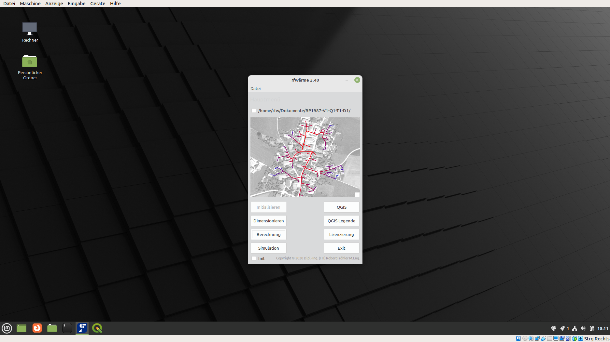

Virtualbox
Zur einfachen Verwendung wurde eine virtuelle Maschine mit einem Linux Mint System erstellt.
Diese kann mit der Software VirtualBox von Oracle aus vielen Betriebssystemen gestartet werden.

Der Download dieser Virtuellen Maschine erfolgt unter folgendem Link:
Virtuelle Maschine - rfWärme
Nach dem Download werden diese Dateien im Programm VirtualBox als neue Maschine eingebunden.